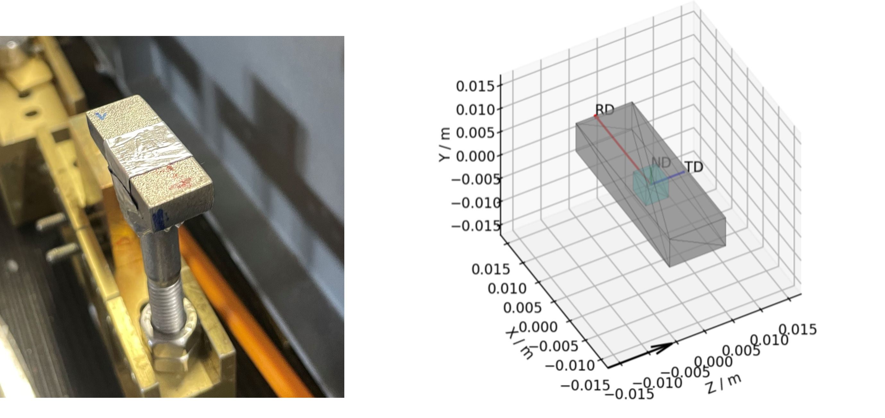
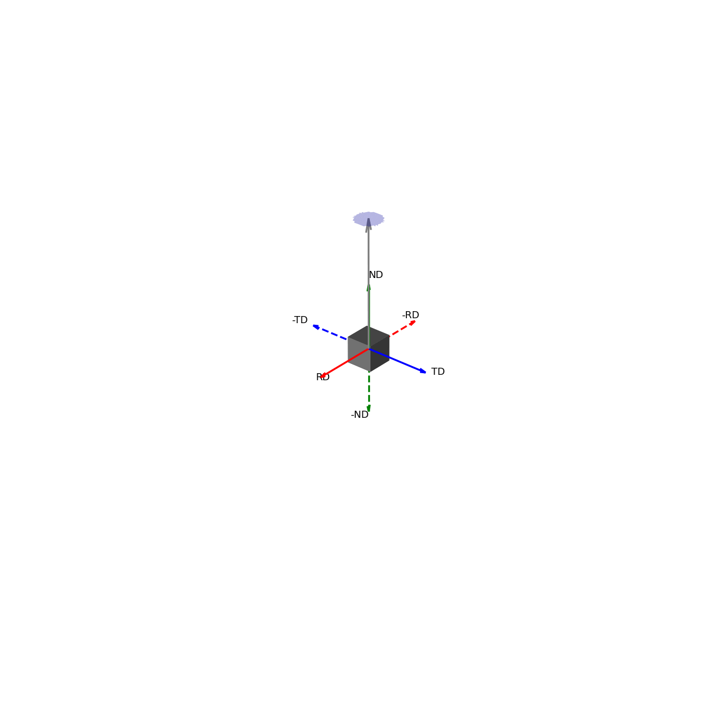
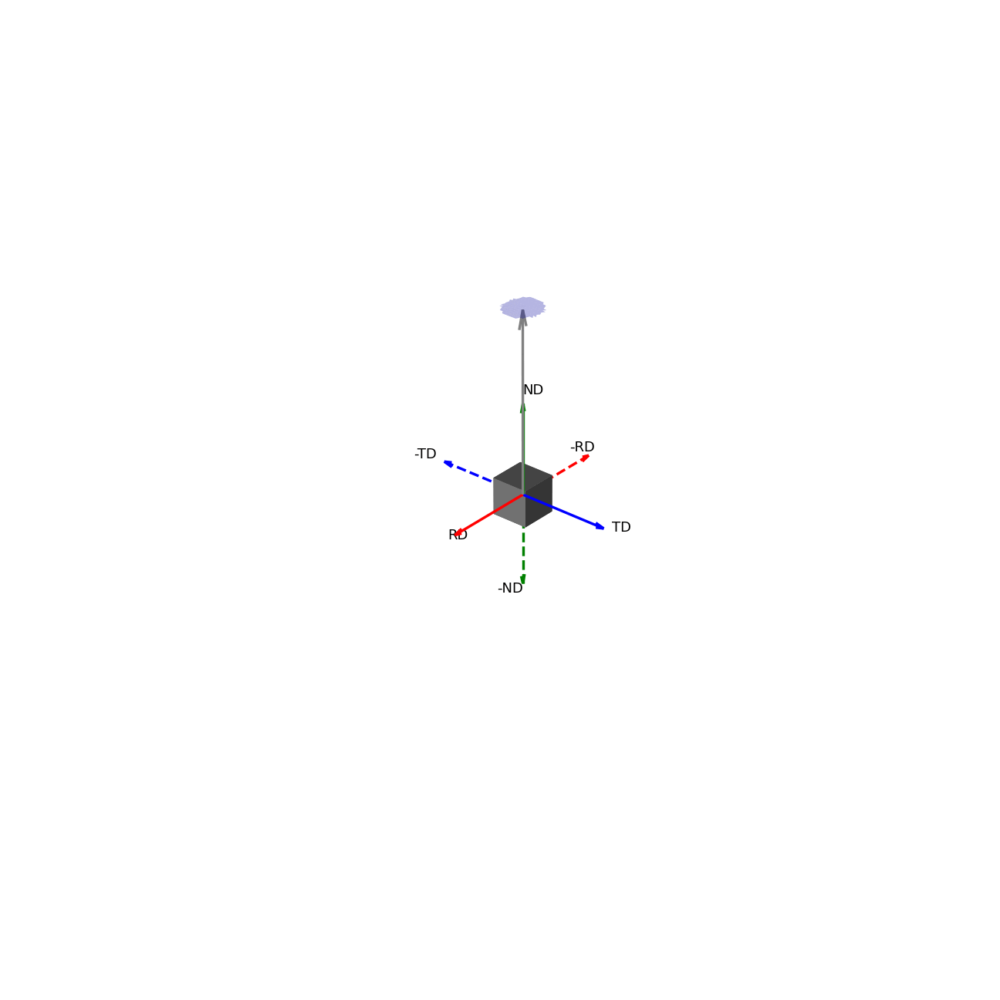
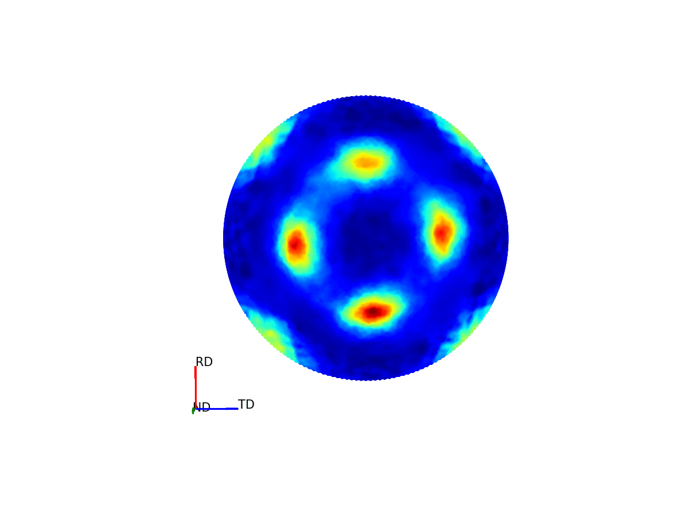
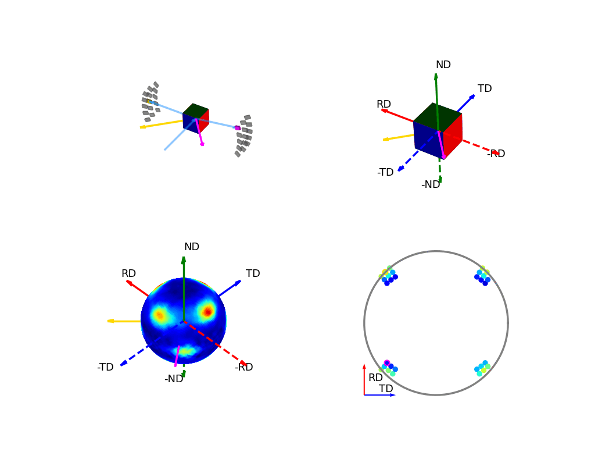
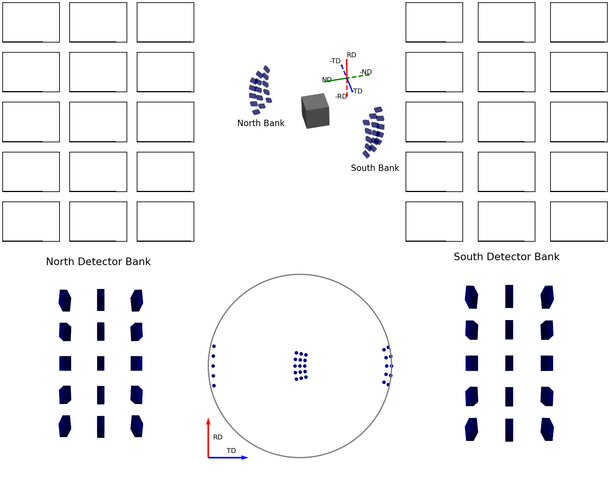
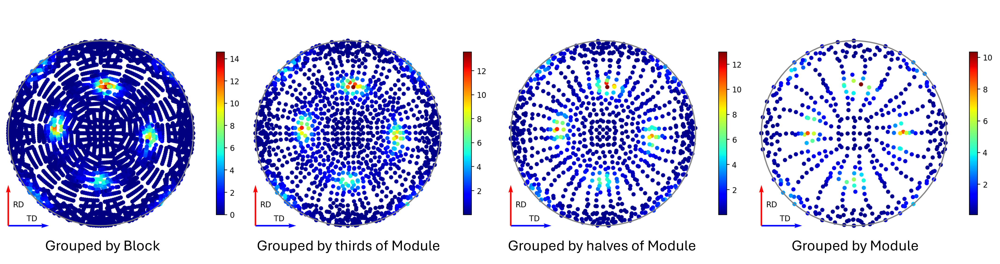

Texture Analysis Theory#
Introduction to Texture Analysis#
For argument’s sake, let’s say you have some sample and you are interested in knowing it’s crystallographic texture – that is to say, you want to know what the relationship is between the macroscopic dimensions of your sample and some given crystallographic plane e.g. \((100)\)?

Figure 1 - An example cuboid sample and a corresponding mantid representation, the intrinsic directions corresponding to: the Rolling Direction (RD); the Traverse Direction (TD); and the Normal Direction (ND), are shown with the red, blue and green arrows.#
Taking the above sample as example, you can see that, by virtue of being a cuboid, the sample has a unique height, width and length. These directions may or may not also be correlated with some processing procedure (e.g. in this case: the length is the Rolling Direction; The width is the Traverse Direction and the height is the Normal Direction).
Some subsequent questions you might have about your sample are:
How is the underlying crystal structure orientated in relation to these macroscopic directions?
Does this relationship change when looking at different points within the sample?
Is this relationship a product of the processing?
These might be especially of interest to you if critical mechanical properties of the material are related to the orientation/size of crystal grains. These are the questions which the texture analysis pipeline in Mantid seeks to help you answer.
Within Mantid, you are able to produce Pole Figures for different Bragg reflections. The experimental pole figure plot will typically show the fitted intensity parameter of the peak associated with that reflection, along different macroscopic sample directions. As each Bragg reflection corresponds to a specific set of crystallographic planes with defined orientations relative to the crystal structure, the intensity of a given Bragg peak in different macroscopic directions provides information on the alignment of that set of atomic planes to that sample direction (within the volume of sample both: illuminated by the beam and; visible by the detectors).
By moving this illuminated volume (gauge volume) within the sample and observing the change to the reflection intensities, it is further possible to investigate how the crystallographic texture changes throughout a sample. If you then repeat these experiments with different sample processing, you could then determine the extent to which the observed texture is a product of the specific processes used. Additionally, you are able to produce similar plots but looking at other features of the Bragg peak, such as peak position for strain mapping.
Once these experimental pole figures have been produced within Mantid, the onus is on the user to take the experimental pole figure data and perform the rigorous analysis elsewhere, to generate theoretical pole figures and/or orientation distribution functions, to draw ultimate conclusions regarding crystallographic texture.
Below, we will first provide an explanation as to what you are looking at when you see a pole figure and why that is of interest. From here, we will cover a basic overview of how the experimental data collection is done and how this data is processed to create the pole figure. We will then finally provide some examples of how this can be done within Mantid using some scripts as example.
Interpreting Pole Figures#
A way to interpret the pole figure is to imagine that your sample is placed within a sphere. Each unique direction relative to your sample will intercept the sphere at a unique point – these points are the poles (like the North and South Poles of the Earth).
If we imagine being able to sample the intensity of your given reflection peak in every possible direction, this would correspond to sampling the surface of the sphere. Plotting the intensity associated with a Bragg peak in each of these direction onto this sphere, we would get a complete 3D representation of how the intensity changes along all macroscopic sample directions. This is shown in the first of the two graphics below. The second graphic then shows the same intensity plot, but with the intensity values convolved into the radial coordinate, which gives another spatial representation of the intensity of the bragg reflection as a function of direction around the sample.
 Figure 2 - Direction vectors around a sample.# |
 Figure 3 - Directions convolved with intensity.# |
{kind=link}
{kind=link}
Much like how maps of the world provide 2D representations of the 3D globe, we can do the same thing by projecting this 3D pole figure down into a 2D pole figure. The below graphic shows the relationship between the 2D pole figure which are commonly encountered and that 3D sphere which defines all unique directions around a sample.
{kind=link}

Figure 4 - Animation showing how the relationship between the 3D and 2D representations of the pole figure.#
The surface of this sphere is again coloured by the intensity of a selected bragg peak, giving a 3D pole figure. Additionally, the graphic shows the distortion between this spherical representation and the intensity convolved representation.
The way the 3D pole figure is projected into the plane matters, as different transformations compromise on which geometric properties of the 3D surface are preseverved in the 2D representation (e.g. the azimuthal and stereographic projections provided maintain angular relationships, which can be useful for viewing the symmetry relationships of poles).
In reality, we cannot sample every possible point on this sphere – we are experimentally confined by our detector geometries and finite time, to only sample a subset of these points. These are the points which are displayed in the experimental pole figure scatter plot. (It is possible to interpolate between these points to get a more continuous representation – which is given as an option to display the contour plot instead, but it is worth stressing that this does not provide an suitable replacement for a robust calculation of a theoretical pole figure).

Figure 5 - Image comparing the scatter plot pole figure and the contour interpolation#
Generating Pole Figures#
Here we provide two animations which aim to explain how the experimental pole figures are created.
The first of the these two, the below figure, shows how the orientation of the detectors, relative to the sample, relates to the 3D and 2D pole figures. The top two graphics show the individual scattering vectors for two of the detectors, depicted as gold and pink arrows, and how the intrinsic directions of the sample move relative to these scattering vectors as the orientation of that sample changes during the experiment. The bottom left graphic then shows, in the fixed, intrinsic sample frame of the pole figures, the corresponding relative movement of these scattering vectors. Here the sphere is coloured with the intensity of the complete pole figure. The bottom right graphic shows how the scattering vectors (corresponding to all the 30 detectors) are then projected into the 2D pole figure, again, the pink and gold detectors are highlighted here.

Figure 6 - Animation showing the relationship between the experimental geometry and the pole figure#
The second of these graphics, again below, shows how the intensities are determined for the points in the experimental pole figure. Here the two detector banks have been split up into 3x5 grids. The summed spectra for each block in the grid is collected over the course of the experiment and these are shown on the left and right plots. The pole figure for a given reflection is then generated by fitting a peak to the desired reflection and reading out the peak parameter of interest which, in the case shown, is the integrated intensity. The bottom plots show these integrated intensity values on the actual detector banks and how these are projected into the 2D pole figure.

Figure 7 - Animation showing how intensities are calculated for each detector in the pole figure#
Pole Figure Resolution and Coverage#
A few factors will affect the final quality of the experimental pole figure data, with the two main considerations being how the detector banks are grouped and for what sample orientations data is collected.
In mantid, the first of these – the detector groupings, can be decided after the experiment has been run. The reality here (at least for ENGIN-X), is that although it is possible to generate an experimental pole figure using each individual detector pixel as a unique point, the spectra collected from these may suffer as a result of poor signal-to-noise-ratio of those individual signals. This signal-to-noise-ratio can be improved by grouping neighbouring pixels together, thus obtaining cleaner spectra to fit, at the trade off of angular resolution. Alternatively, beam access permitting, longer collection times can be used to improve signal-to-noise, theoretically allowing these finer pixel groupings to be feasible. The below figure shows the same runs processed using different detector groupings, and the effect this has on the pole figure coverage.

Figure 8 - Image showing pole figures using different detector groupings.#
The second factor – sample orientations, is something which perhaps requires more consideration before hitting GO on data collection. The factors to weigh up here are optimising your balance of time vs uncertainty. If you are quite confident in some aspect of your texture (such as a known symmetry), you may be able to target your data collection to obtain datasets with the detectors covering only a few key sectors in the pole figure, saving time by reducing the number of experimental runs. In contrast, if the texture is unknown, the optimal strategy is most likely to be one where you obtain even coverage across the entire pole figure, and you aim to do this in a time efficient manner, by minimising overlap of successive runs. Another consideration of this exploratory coverage, compared to a more targeted approach is that you will likely end up with an experimental pole figure which has fewer data points around the actual regions of interest. As such, again time permitting, a dual approach may prove advantageous for unknown textures, where a preliminary full coverage dataset is collect and, upon subsequent inspection, addition runs are collected targeting the identified regions of interest. A discussion of possible exploratory coverage schemes is given in [1].
Producing Pole Figures within Mantid#
The creation of experimental pole figures within Mantid can be achieved in two distinct workflows: either using scripts within the python interface or through the Engineering Diffraction user interface. The application of the latter will be discussed separately in Engineering Diffraction, here we will focus on the scripting approach. It is worth noting that for practical application, the scripts offer the most time efficient workflow and, as such, are probably the preferable approach for creating pole figures post-experiment. The user interface, contrastingly, offers a more interactive approach which lends itself to processing and guiding the evolution of the experiment, as it is being conducted.
Introduction to Sample Shape, Material, and Orientation#
A critical aspect in creating the experimental pole figure is having the correct representation of the sample, its shape, and its intrinsic directions for each dataset you process. This is crucial because these are the factors which will determine where detector points are projected in the pole figure. Getting these things right within mantid, should hopefully, not be too onerous, but care should be taken to make good records of the physical layouts during the experiment to check your recreation in mantid.
The way the texture analysis has been designed in Mantid, is that each run’s workspace should contain the information about the sample shape and its orientation relative to an initial reference position. It is then required, at the point of pole figure creation, to provide the intrinsic sample directions, in lab coordinates, for this initial reference position. Typically, this is achieved by having the initial reference position as the sample mounted upon the goniometer of choice in its default “home” position. The sample would ideally be aligned on the homed goniometer to have intrinsic directions aligned with simple, identifiable directions in the lab coordinates, which is often intuitively done in practice (intrinsic directions are typically aligned with some topological features and these are oft aligned to be parallel or perpendicular to the beam). If the sample is not so straightforwardly positioned in the reference state, some more care should be taken to get the definition of these initial directions correct.
From here, the transformation to each run’s sample orientation is exactly the same as the transformation defined by the moving the goniometer from its home state for that run. On ENGINX, there are two main goniometers used - the Eulerian Cradle and the Cybaman. Extracting the state transformations for these two goniometers setups is done with different approaches, but should provide coverage for a broad range of additional setups.
The general procedure for transfering these pieces of information onto the relevant workspaces is as follows. First define a “Reference Workspace” upon which the initial sample shape and orientation can be saved (along with any information on material which might be used for absorption correction). Next, load in all the run workspaces corresponding to this experiment. Load an orientation file to set the goniometer transformation on the individual workspaces. Finally, copy the sample definition across from the reference workspace to each of the run workspaces.
This procedure is applied as part of the absorption script provided in the section below. We also provide some additional notes and scripts to aid in the setup of reference workspaces and orientation files.
Reference Workspace#
The following script will allow the setup of the reference workspace.
# import mantid algorithms, numpy and matplotlib
from mantid.simpleapi import *
import matplotlib.pyplot as plt
import numpy as np
from Engineering.texture.correction.correction_model import TextureCorrectionModel
# Create an example Reference Workspace
# set experiment name
exp_name = "Example"
# set the directory where your workflow files should be saved
save_root = r"C:\Users\fedid12345\Engineering_Mantid"
root_dir = fr"{save_root}\User\{exp_name}"
instr = "ENGINX"
# set shape info to either be a shape xml string or a file to an stl
example_shape_info = """
<hollow-cylinder id="A">
<centre-of-bottom-base x="-0.01315" y="-0.01315" z="-0.00756" />
<axis x="0.0" y="0.0" z="1.0" />
<inner-radius val="0.0145" />
<outer-radius val="0.0223" />
<height val="0.01512" />
</hollow-cylinder>
"""
sample_material = "Zr"
model = TextureCorrectionModel()
model.create_reference_ws(exp_name, instr)
# if it ends with .stl assume we have been given the file path
model.set_sample_info(model.reference_ws, example_shape_info, sample_material)
# save reference file
model.save_reference_file(exp_name, None, root_dir) # just set group as None here
Orientation Files#
As discussed previously, the orientation information is expected to come from either the Eulerian Cradle or the Cybaman, but these two goniometers are handled broadly
by providing either a series of fixed rotations around known axes (cradle) or by providing a flattened transformation matrix corresponding to a more complicated
transformation (cybaman). The flag which controls this behaviour is orient_file_is_euler.
If this is True, the orientation file is expect to be a text file with a row for each run and, within each row, a rotation angle for each axis.
An example snippet is shown below:
45 0 0
45 30 180
45 45 0
45 45 180
45 45 270
45 55 100
45 90 0
These axes are then defined by euler_scheme, taking a string of lab directions for the initial
axes of each goniometer axis. The sense of the rotation around these axes are then defined by euler_axes_sense, where the string given should be comma separated +/-1,
one for each axis, where rotations are counter-clockwise (1) or clockwise (-1).
If orient_file_is_euler is False, the orientation file is expected to be a text file with a row for each run and, within each row the first 9 values are expected to
be a “C-style” (row-major) flattened 3x3 transformation matrix. An example is shown below for the equivalent if the above euler file
(for euler_scheme = YXY and euler_axes_sense = "-1,-1,-1")
0.7071147,2.05e-05,-0.7070989,1.45e-05,1.0,4.35e-05,0.7070989,-4.1e-05,0.7071147
-0.707094,0.3535975,0.6123617,-1.39e-05,0.8659876,-0.5000654,-0.7071196,-0.3536017,-0.6123297
0.707098,0.4999857,-0.5000267,2.63e-05,0.7071172,0.7070964,0.7071155,-0.4999996,0.499988
-0.7071186,0.499997,0.4999862,-1.37e-05,0.7070894,-0.7071242,-0.7070949,-0.5000275,-0.4999892
0.4999937,0.4999759,0.7071283,-0.7070834,0.7071302,-1.52e-05,-0.5000394,-0.4999911,0.7070852
-0.5222607,0.5792695,-0.6258519,0.8067115,0.573551,-0.1423229,0.2765147,-0.5792116,-0.7668465
0.7071052,0.7071078,-0.0008898,-1.14e-05,0.0012697,0.9999992,0.7071084,-0.7071046,0.0009059
It is anticipated that this matrix would be extracted from the SscansS2 software [2], and a script is provided below for converted the transformation matrices from SscansS2 reference frame into mantid. In principle, a flattened matrix from any sample positioner could be given here instead.
# import mantid algorithms, numpy and matplotlib
from mantid.simpleapi import *
import matplotlib.pyplot as plt
import numpy as np
# script to covert a file with flattened matrices that have been generated in sscanss (and
# thus us in the sscanss reference frame where beam = X, detector = Y, roof = Z) into a
# matrix that is in the mantid reference frame
# Just set the txt file path and the tell it the number of scan points there were and you
# will get a _mantid_point_n.txt file created for each point
#~~~~~~~~~~~~~~~~~ Setup ~~~~~~~~~~~~~~~~~~~~~~~~~~~~~~~~~~~~~~~~~
txt_file = r"path\to\file\Zirc_ring_pose_matrices.txt"
NUM_POINTS = 3
#~~~~~~~~~~~~~~~~~~ Script Execution ~~~~~~~~~~~~~~~~~~~~~~~~
with open(txt_file, "r") as f:
goniometer_strings = [line.replace("\t", ",") for line in f.readlines()]
transformed_strings = []
def convert_from_sscanss_frame(r_zxy):
# Define M: matrix to convert vectors from XYZ to ZXY
M = np.array([
[0, 0, 1], # X in ZXY = Z in XYZ
[1, 0, 0], # Y in ZXY = X in XYZ
[0, 1, 0] # Z in ZXY = Y in XYZ
])
M_inv = M.T # since M is orthonormal
# Apply the similarity transform in reverse express R in XYZ frame
return M.T @ r_zxy @ M
for gs in goniometer_strings:
or_vals = gs.split(",")
trans_vals = or_vals[9:]
run_mat = np.asarray(or_vals[:9], dtype=float).reshape((3, 3)).T
mantid_mat = convert_from_sscanss_frame(run_mat)
new_string = ",".join([str(x) for x in mantid_mat.reshape(-1)]+trans_vals)
transformed_strings.append(new_string)
num_scans = len(goniometer_strings)//NUM_POINTS
for scan_ind in range(NUM_POINTS):
save_file = txt_file.replace(".txt", f"_mantid_point_{scan_ind}.txt")
with open(save_file, "w") as f:
f.writelines(transformed_strings[scan_ind*num_scans:(scan_ind+1)*num_scans])
Absorption Correction#
A consideration when performing texture analysis is to decide how to deal with attenuation and absorption. Depending upon the material being used, the accuracy required, and the amount of time available, you may or may not want to apply a correction to the raw data to correct for neutron attenuation. Mantid offers a suite of approaches to tackle this (Absorption and Multiple Scattering Corrections), so to a certain extent this can be tailored to the use case, but here we will discuss the methodology designed to replicate the functionality available within the user interface, making use of MonteCarloAbsorption v1.
Below is a script that can be used to this end. The script is split into three sections - imports, experiment information, and execution. For most use cases the only section needing attention is the experimental information. This section should be sufficiently annotated to explain how to use it, but should mirror the user interface while providing more repeatable processing.
# import mantid algorithms, numpy and matplotlib
from mantid.simpleapi import *
import matplotlib.pyplot as plt
import numpy as np
from mantid.api import AnalysisDataService as ADS
from os import path, makedirs, scandir
from Engineering.texture.TextureUtils import find_all_files, run_abs_corr
import string
############### ENGINEERING DIFFRACTION INTERFACE ABSORPTION CORRECTION ANALOGUE #######################
######################### EXPERIMENTAL INFORMATION ########################################
# First, you need to specify your file directories, If you are happy to use the same root, from experiment
# to experiment, you can just change this experiment name.
exp_name = "PostExp-ZrRingDiagScript"
# otherwise set root directory here:
root_dir = fr"C:\Users\name\Engineering_Mantid\User\{exp_name}"
# next, specify the folder with the files you would like to apply the absorption correction to
corr_dir = r"C:\Users\name\Documents\dev\TextureCommisioning\Day3\ZrRing\DataFiles\Point2"
# For texture, it is expected that you have a single sample shape, that is reorientated between runs.
# this is handled by having a reference workspace with the shape in its neutral position
# (position in the beamline when the goniometer is home)
# This reference workspace probably requires you to do some interacting and validating, so should be setup in the UI
# (Interfaces/Diffraction/Engineering Diffraction/Absorption Correction)
# if this is the case copy ref should be True and the ref_ws_path should be given
# otherwise, if set ref is true, it is assumed that the sample shapes are already present on the workspaces
copy_ref = True
ref_ws_path = path.join(root_dir, "ReferenceWorkspaces", f"{exp_name}_reference_workspace.nxs")
# if using the reference you now need to reorientate the sample, this can be done using orientation files
# two standard types
# Euler Orientation (orient_file_is_euler = True)
# for this, euler_scheme and euler_axes_sense must be given to say which lab frame directions the goniometer axes are pointing along
# and where the rotations are counter-clockwise (1) or clockwise (-1)
# Matrix Orientation (orient_file_is_euler = False)
# for this the first 9 values in each row of the files are assumed to be flattened rotation matrix.
# These are used to directly reorientate the samples
orientation_file = r"C:\Users\name\Documents\dev\TextureCommisioning\Day3\ZrRing\Sscanss\Split\Zirc_ring_pose_matrices_mantid_point_1.txt"
orient_file_is_euler = False
euler_scheme = "YXY"
euler_axes_sense = "1,-1,1"
# Now you can specify information about the correction
include_abs_corr = True # whether to perform the correction based on absorption
monte_carlo_args = "SparseInstrument:True" # what arguments to pass to MonteCarloAbsorption alg
clear_ads_after = True # whether to remove the produced files from the ADS to free up RAM
gauge_vol_preset = "4mmCube" # or "Custom" # the gauge volume being used
gauge_vol_shape_file = None # or "path/to/xml" # a custom gauge volume shape file
# There is also the option to output an attenuation table alongside correcting the data
# This will return a table of the attenuation coefficient at the point specified
include_atten_table = False
eval_point = "2.00"
eval_units = "dSpacing" #must be a valid argument for ConvertUnits
# Finally, you can add a divergence correction to the data, this is still a work in progress, so keep False for now
include_div_corr = False
div_hoz = 0.02
div_vert = 0.02
det_hoz = 0.02
######################### RUN SCRIPT ########################################
# load the ref workspace
ref_ws_str = path.splitext(path.basename(ref_ws_path))[0]
Load(Filename = ref_ws_path, OutputWorkspace = ref_ws_str)
# load data workspaces
corr_wss = find_all_files(corr_dir)
wss = [path.splitext(path.basename(fp))[0] for fp in corr_wss]
for iws, ws in enumerate(wss):
if not ADS.doesExist(ws):
Load(Filename = corr_wss[iws], OutputWorkspace= ws)
# on some operating systems (e.g Linux), this file retrieval will not necessarily give files in numerical run order.
# the below line assumes that your filename is in the form INSTR00123456 (where 123456 is the run number) and will sort the files into ascending run order.
# If your file is not in this format the key lambda function will need to be adjusted to retrieve the run number to then sort them into the correct order to match
# the order of rows in orientation file
#wss = sorted(wss, key = lambda x: int(x.split("_")[0].strip(string.ascii_letters)))
# run script
run_abs_corr(wss = wss,
ref_ws = ref_ws_str,
orientation_file = orientation_file,
orient_file_is_euler = orient_file_is_euler,
euler_scheme = euler_scheme,
euler_axes_sense = euler_axes_sense,
copy_ref = copy_ref,
include_abs_corr = include_abs_corr,
monte_carlo_args = monte_carlo_args,
gauge_vol_preset = gauge_vol_preset,
gauge_vol_shape_file = gauge_vol_shape_file,
include_atten_table = include_atten_table,
eval_point = eval_point,
eval_units = eval_units,
root_dir = root_dir,
include_div_corr = include_div_corr,
div_hoz = div_hoz,
div_vert = div_vert,
det_hoz = det_hoz,
clear_ads_after = clear_ads_after)
Focusing#
Regardless of whether absorption correction has been applied (at the very least the absorption correction script should probably be run with include_abs_corr = False,
in order to apply the sample shape and orientations), some focusing of data is likely required for creating pole figures. In principle, unfocussed data could be used,
but this would be rather slow due to the fitting of peaks on each spectra, and this would not necessarily provide meaningful improvement in spatial resolution. As far as
ENGINX is concerned, grouping any more finely than the block level is mostly diminishing returns. Groupings can be made using the CreateGroupingByComponent v1 algorithm
(with examples given on that page, and an example usage is commented out in the snippet below)
These cal files can be provided as a grouping_filepath if desired, or used to calibrate in the user interface and the resultant prm file can be used for focusing.
If using a standard grouping, no grouping_filepath or prm_filepath is required, and simply the string (e.g. "Texture30") is needed.
# import mantid algorithms, numpy and matplotlib
from mantid.simpleapi import *
from mantid.api import AnalysisDataService as ADS
import numpy as np
from Engineering.texture.TextureUtils import find_all_files, run_focus_script, mk
from Engineering.common.calibration_info import CalibrationInfo
from Engineering.EnggUtils import GROUP
import os
import shutil
import string
############### ENGINEERING DIFFRACTION INTERFACE FOCUS ANALOGUE #######################
######################### EXPERIMENTAL INFORMATION ########################################
# First, you need to specify your file directories, If you are happy to use the same root, from experiment
# to experiment, you can just change this experiment name.
exp_name = "Example"
# otherwise set root directory here:
root_dir = fr"C:\Users\Name\Engineering_Mantid\User\{exp_name}"
# next, specify the folder with the files you would like to focus
# (if you are using the standard scripts this might not need to change)
data_dir = fr"{root_dir}\AbsorptionCorrection"
# fill in the file paths for the vanadium and ceria runs (just run numbers might work if you are setup into the file system)
van_run = r"C:\Users\Name\DataFiles\ENGINX00361838.nxs"
ceria_run = "305738"
# set the path to the grouping file created by calibration
prm_path = None # fr"{root}\Calibration\ENGINX_305738_Texture30.prm"
grouping = "Texture30" # use "Custom" if you want to provide custom grouping
groupingfile_path = None # r"C:\Users\Name\block.cal" # if a custom cal/xml grouping file is desired
#example snippet for custom grouping:
#CreateGroupingByComponent(InstrumentName = "ENGINX",
# OutputWorkspace = "test_group",
# ComponentNameIncludes = "block",
# ComponentNameExcludes = "transmission",
# GroupSubdivision = 1)
#SaveCalFile(r"path\to\cal\block.cal", GroupingWorkspace = "test_group")
#grouping = "Custom"
#groupingfile_path = r"path\to\cal\block.cal"
# Define some file paths, can be found in the interface settings
full_instr_calib = r"C:\mantid\scripts\Engineering\calib\ENGINX_full_instrument_calibration_193749.nxs"
######################### RUN SCRIPT ########################################
run_files = find_all_files(data_dir)
run_focus_script(wss = run_files,
focus_dir = root_dir,
van_run = van_run,
ceria_run = ceria_run,
full_instr_calib = full_instr_calib,
grouping = grouping,
prm_path = prm_path,
groupingfile_path = groupingfile_path)
# Currently the bank-wise grouping is not treated as a texture grouping so doesn't create a
# separate grouping directory automatically. While this can be ignored, it will work better with the
# other scripts if the file structures are the same
if grouping == "banks":
bank_focus_dir = os.path.join(root_dir, "Focus", "CombinedFiles")
# get grouping directory name
calib_info = CalibrationInfo(group = GROUP(grouping))
if groupingfile_path:
calib_info.set_grouping_file(groupingfile_path)
elif prm_path:
calib_info.set_prm_filepath(prm_path)
group_folder = calib_info.get_group_suffix()
focussed_data_dir = os.path.join(root_dir, file_folder, group_folder)
# create output directory
mk(os.path.join(root_dir, file_folder, group_folder))
mk(focussed_data_dir)
shutil.move(bank_focus_dir, focussed_data_dir)
Fitting#
Once the data has been focused, it is most likely that the desire is to extract some fitted parameters from these focused spectra. The following script can be used to
do this. This script will fit a BackToBackExponential to each peak provided in the peaks list and save the associated parameters into individual table workspaces.
Additionally to fitting the peak, the table will also contain a numerical integration of the peak window after subtraction of a linear background (I_est).
# import mantid algorithms, numpy and matplotlib
from mantid.simpleapi import *
import matplotlib.pyplot as plt
import numpy as np
from mantid.api import AnalysisDataService as ADS
from os import path, makedirs, scandir
from Engineering.texture.TextureUtils import find_all_files, fit_all_peaks, mk
from Engineering.common.calibration_info import CalibrationInfo
from Engineering.EnggUtils import GROUP
############### ENGINEERING DIFFRACTION INTERFACE FITTING ANALOGUE #######################
######################### EXPERIMENTAL INFORMATION ########################################
# First, you need to specify your file directories, If you are happy to use the same root, from experiment
# to experiment, you can just change this experiment name.
exp_name = "Example"
# otherwise set root directory here:
root_dir = fr"path\to\User\{exp_name}"
# Next the folder contraining the workspaces you want to fit
file_folder = "Focus"
# These are likely within a sub-folder specified by the detector grouping
grouping = "Texture30"
prm_path = None
groupingfile_path = None
# You also need to specify a name for the folder the fit parameters will be saved in
fit_save_folder = "ScriptFitParameters-FitTest"
# Provide a list of peaks that you want to be fit within the spectra
peaks = [2.03,1.44, 1.17, 0.91] # steel
# The fitting has a couple of parameters that deal with when peaks are missing as a result of the texture
# The first parameter is 1_over_sigma_thresh - this determines the minimum value of I/sigma for a fit to be considered as for a valid peak
# any invalid peak will have parameters set to nan by default, but these nans can be overwritten by no_fit_value_dicts and nan_replacement
# no_fit_value_dict takes fitted parameter names and allows you to specify what the unfit value should be eg. {"I":0.0} - if you can't fit intensity
# set the value directly to 0.0
# nan_replacement then happens after this, if a nan_replacement method is given any parameters without an unfit_value provided will have nans replaced
# either with "zeros", or with the min/max/mean value of that parameter (Note: if all the values are nan, the value will remain nan)
i_over_sigma_thresh = 5.0
no_fit_value_dict = {"I": 0.0, "I_est": 0.0, "I_err": 0.0}
nan_replacement = None
######################### RUN SCRIPT ########################################
# create output directory
fit_save_dir = path.join(root_dir, fit_save_folder)
mk(fit_save_dir)
# find and load peaks
# get grouping directory name
calib_info = CalibrationInfo(group = GROUP(grouping))
if groupingfile_path:
calib_info.set_grouping_file(groupingfile_path)
elif prm_path:
calib_info.set_prm_filepath(prm_path)
group_folder = calib_info.get_group_suffix()
focussed_data_dir = path.join(root_dir, file_folder, group_folder, "CombinedFiles")
focus_ws_paths = find_all_files(focussed_data_dir)[:3]
focus_wss = [path.splitext(path.basename(fp))[0] for fp in focus_ws_paths]
for iws, ws in enumerate(focus_wss):
if not ADS.doesExist(ws):
Load(Filename = focus_ws_paths[iws], OutputWorkspace= ws)
# execute the fitting
fit_all_peaks(focus_wss, peaks, 0.05, fit_save_dir, i_over_sigma_thresh = i_over_sigma_thresh, nan_replacement = nan_replacement, no_fit_value_dict = no_fit_value_dict)
Pole Figure creation#
Finally, the focused workspaces and the parameter workspaces can be combined to create the pole figures of interest. The below script can be used to produce a collection of pole figures over a set of different peaks and parameters.
# import mantid algorithms, numpy and matplotlib
from mantid.simpleapi import *
import matplotlib.pyplot as plt
import numpy as np
from mantid.api import AnalysisDataService as ADS
from Engineering.texture.TextureUtils import find_all_files, create_pf_loop, get_xtal_structure, mk
from Engineering.common.calibration_info import CalibrationInfo
from Engineering.EnggUtils import GROUP
import os
############### ENGINEERING DIFFRACTION INTERFACE POLE FIGURE ANALOGUE #######################
######################### EXPERIMENTAL INFORMATION ########################################
# First, you need to specify your file directories, If you are happy to use the same root, from experiment
# to experiment, you can just change this experiment name.
exp_name = "PostExp-SteelCentre"
# otherwise set root directory here:
save_root = r"C:\Users\name\Engineering_Mantid"
root_dir = fr"{save_root}\User\{exp_name}"
ws_folder = "Focus"
fit_save_folder = "ScriptFitParameters"
# define the peaks of interest, NOTE these must correspond to sub folders in the fit directory
peaks = [2.03,1.44, 1.17]
# define the columns you would like to create pole figures for
readout_columns = ["I", "X0"]
# you need to specify the detector grouping
grouping = "Texture30"
# and some grouping path if not using a standard
prm_path = None
groupingfile_path = None
# and the type of projection to plot
projection_method = "Azimuthal"
# you need to define the orientation of the intrinsic sample directions when the sample orientation matrix == I (no rotation)
# this should be the same as the reference state used in the absorption correction
#r2 = np.sqrt(2)/2
dir1 = np.array((1,0,0))
dir2 = np.array((0,1,0)) # projection axis
dir3 = np.array((0,0,1))
# you can also supply names for these three directions
dir_names = ["RD", "ND", "TD"]
# set whether you would like the plotted pole figure to be a scatter of experimental points or whether you would like to apply gaussian smoothing and
# plot a contour representation
scatter = "both"
# if contour, what should the kernel size of the gaussian be
kernel = 6.0
# do you want to include a scattering power correction
include_scatt_power = False
# if so what is the crystal structure, defined either by giving a cif file or supplying the lattice, space group and basis
xtal_input = None # "cif"/"array"/"string"
xtal_args = [] # for input "cif", require the cif filepath, for "array" array of lattice parameters, space group, basis
# for "string" lattice parameter string, space group and basis
# if you have set a crystal, you can also provide a set of hkls, the hkl_peaks dictionary is a useful way of assigning the peaks
hkl_peaks = {1.17: (1,1,2),1.44: (2,0,0),2.03: (1,1,0)} #Fe
chi2_thresh = 0.0 # max value of Chi^2 to be included as a point in the table
peak_thresh = 0.01 # max difference from either the HKL specified or the mean X0
scat_vol_pos = (0.0,0.0,0.0) # for now, can assume the gauge vol will be centred on origin
######################### RUN SCRIPT ########################################
fit_load_dirs = [os.path.join(root_dir, fit_save_folder, calib_info.get_foc_ws_suffix(), str(peak)) for peak in peaks]
hkls = [hkl_peaks[peak] for peak in peaks]
fit_param_wss = []
for ifit, fit_folder in enumerate(fit_load_dirs):
# get fit params
fit_dir = os.path.join(root_dir, fit_folder)
fit_wss = find_all_files(fit_dir)
param_wss = [os.path.splitext(os.path.basename(fp))[0] for fp in fit_wss]
fit_param_wss.append(param_wss)
for iparam, param in enumerate(param_wss):
if not ADS.doesExist(param):
Load(Filename=fit_wss[iparam], OutputWorkspace=param)
pf_root = os.path.join(root_dir, "TextureResults")
pf_dir = os.path.join(pf_root, grouping)
mk(pf_root)
mk(pf_dir)
# As in the absorption correction, on some operating systems (e.g Linux), this file retrieval will not necessarily give files in numerical run order.
# the below line assumes that your filename is in the form INSTR00123456 (where 123456 is the run number) and will sort the files into ascending run order.
# If your file is not in this format the key lambda functions will need to be adjusted to retrieve the run number to then sort them into the correct order to match
# the order of rows in orientation file
focus_wss = sorted(focus_wss, key = lambda x: int(x.split("_")[1]))
fit_param_wss = [sorted(param_wss, key = lambda x: int(x.split("_")[1])) for param_wss in fit_param_wss]
print(focus_wss, fit_param_wss)
create_pf_loop(wss = focus_wss,
param_wss = fit_param_wss,
include_scatt_power = include_scatt_power,
xtal_input = xtal_input,
xtal_args = xtal_args,
readout_columns = readout_columns,
hkls = hkls,
dir1 = dir1,
dir2 = dir2,
dir3 = dir3,
dir_names = dir_names,
scatter = scatter,
kernel = kernel,
scat_vol_pos = scat_vol_pos,
chi2_thresh = chi2_thresh,
peak_thresh = peak_thresh,
save_root = pf_dir,
exp_name = exp_name,
projection_method = projection_method,
create_combined_output = False,
debug_info_level = 2,
override_dir = True)
References#
Category: Concepts